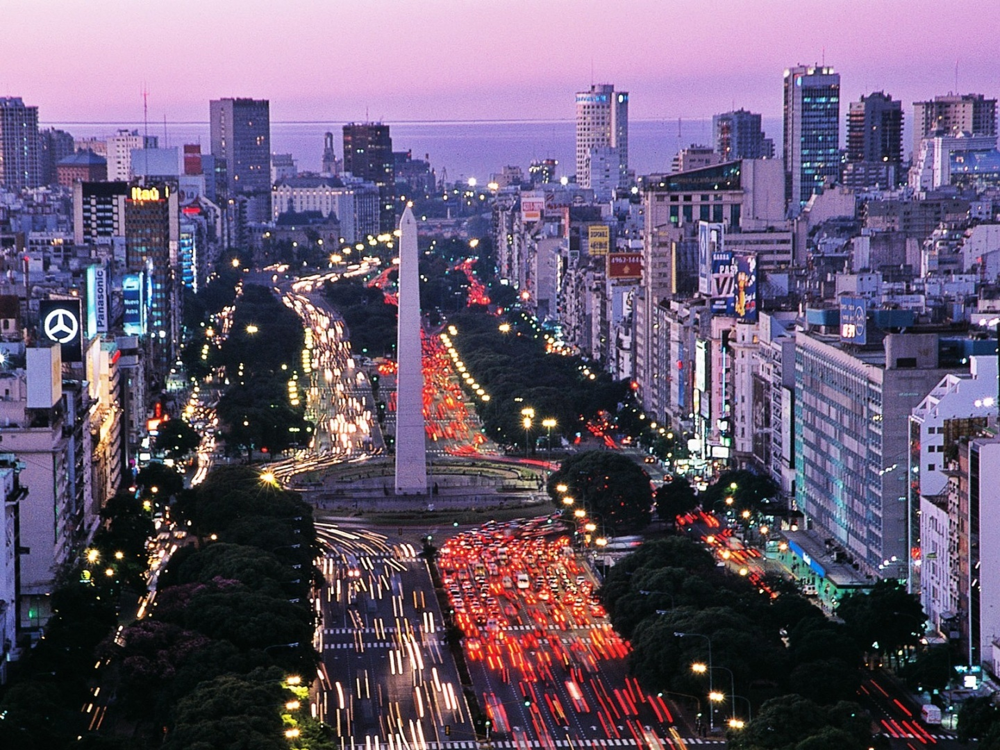
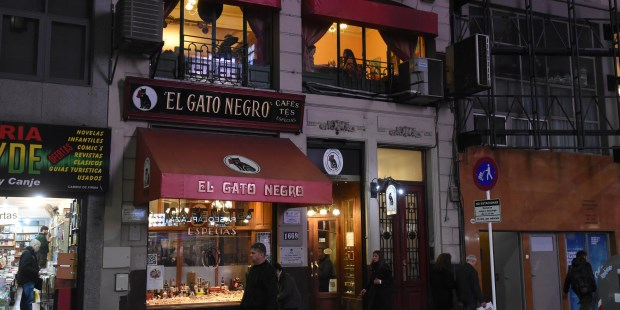
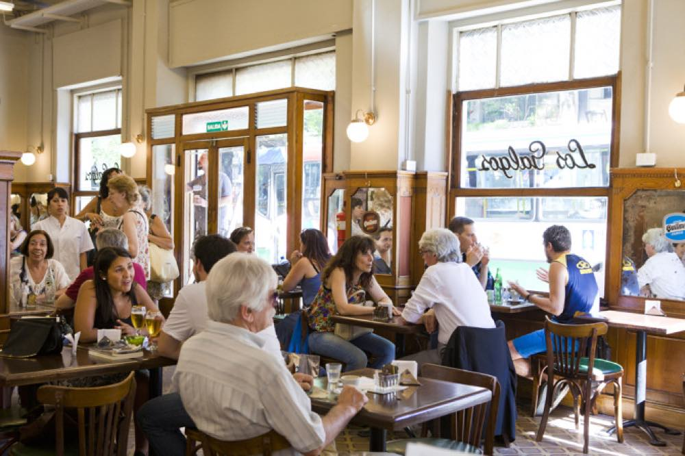
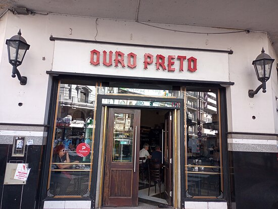
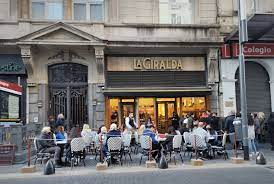
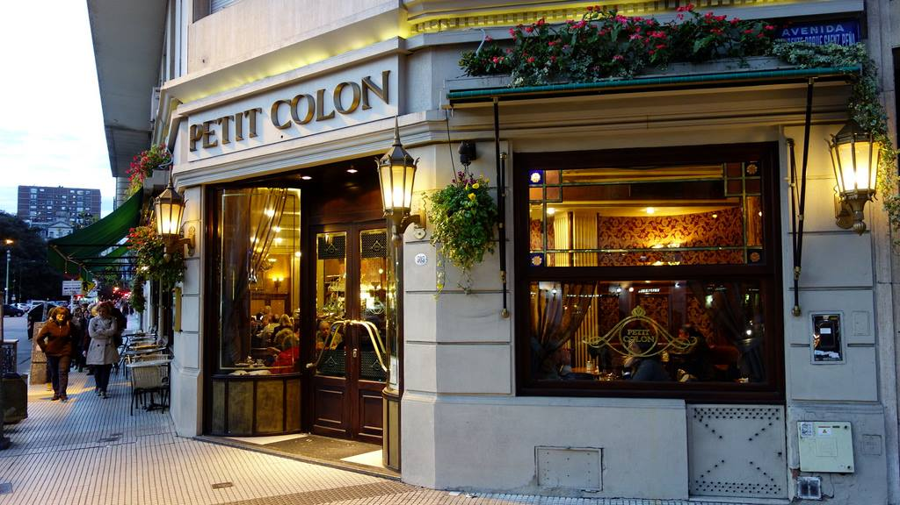

¡Bienvenidos!
🤎☕🥐☕🥐🤎
En esta ocasion, te vamos a recomendar 5 (cinco) cafés notables de la Ciudad de Buenos Aires que no te podes
perder en caso de que estés de visita por acá.
Las calles porteñas todavía guardan un gran amor por el café y es una actividad increible de disfrute y distención.
¿Qué mejor que Calle Corrientes para conocer los mejores cafés del corazón de la ciudad?
🤎☕🥐☕🥐🤎
El Gato negro

Los Galgos

Uoro Pretto

La Giralda

Petit Colon
